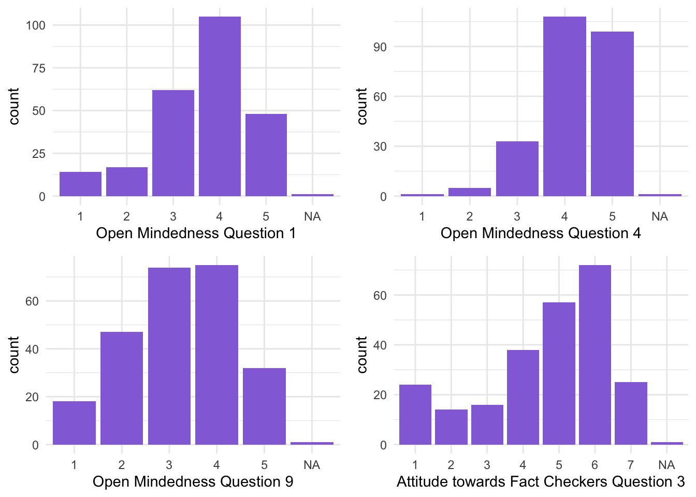
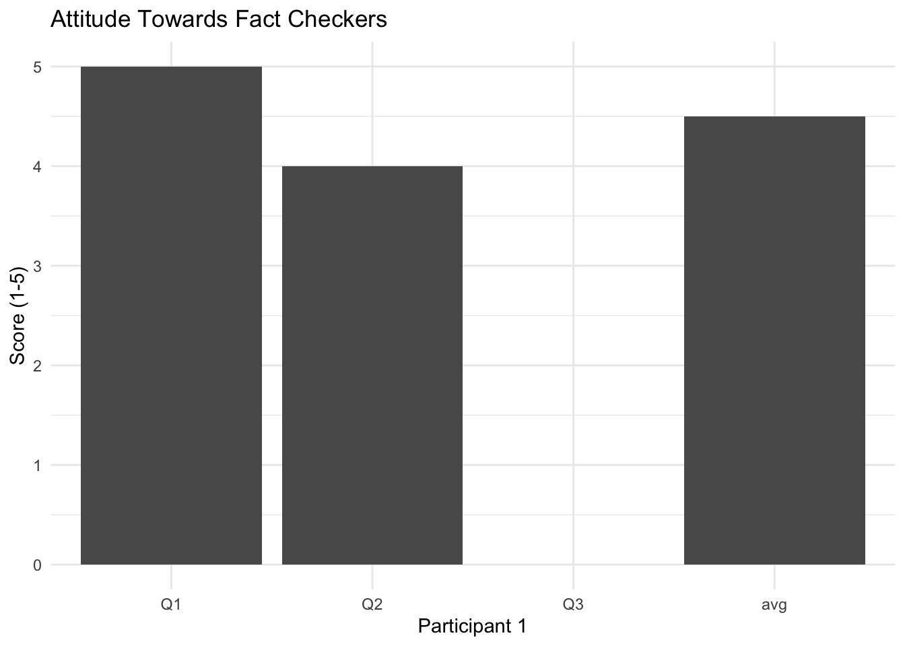
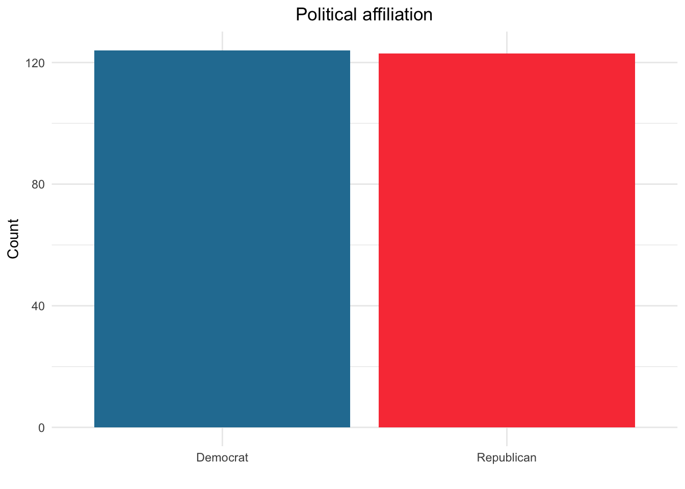
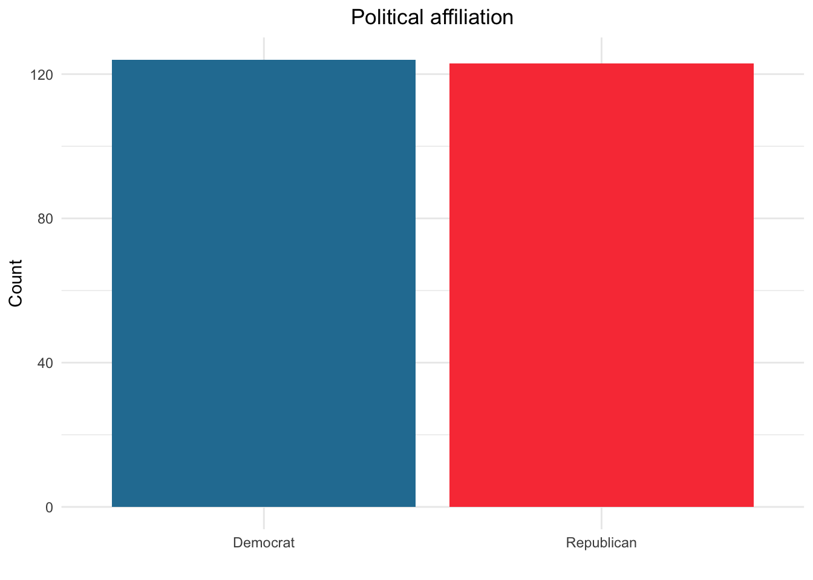
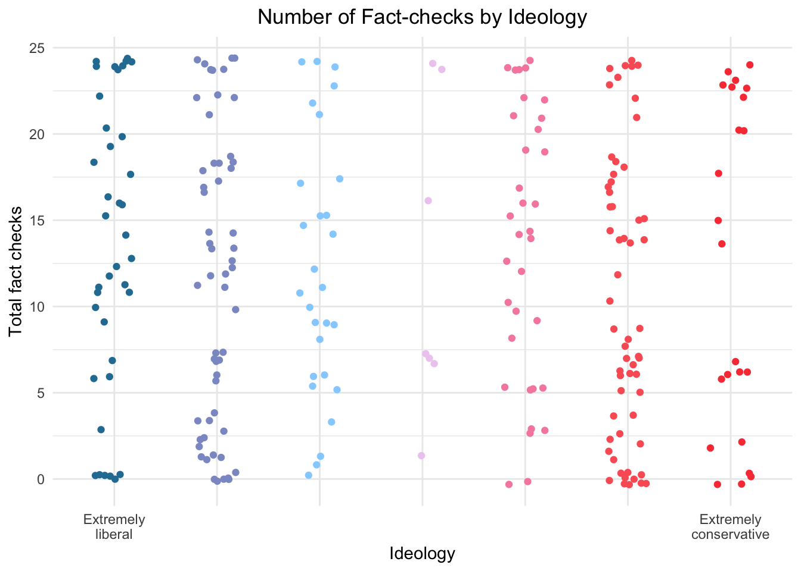
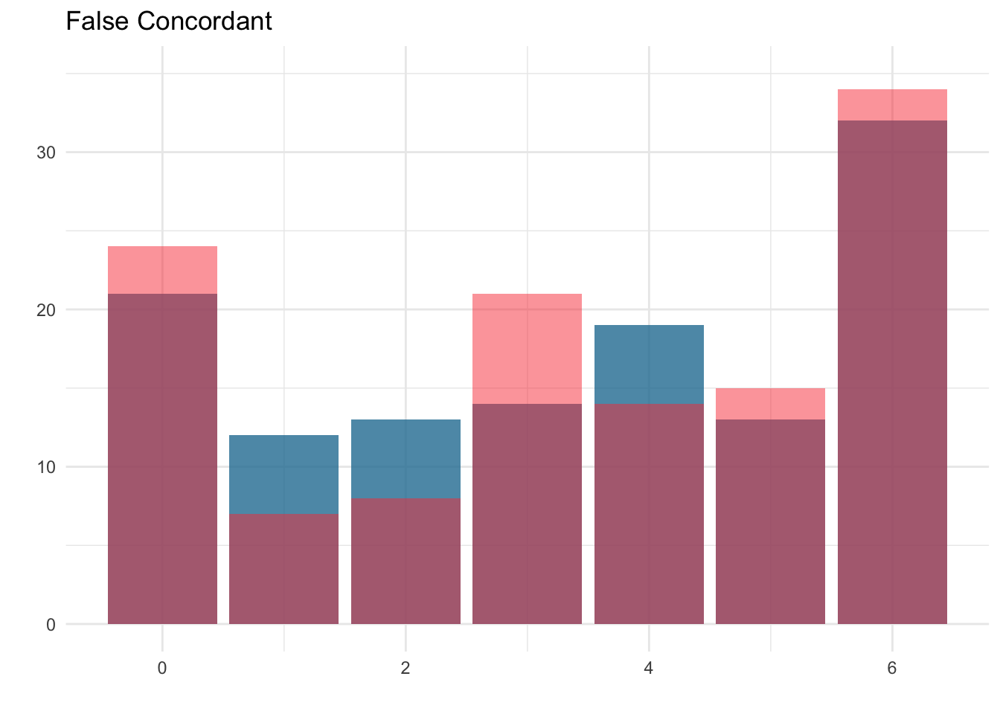

Chapter 4 Results
## 'data.frame': 247 obs. of 53 variables:
## $ pol_party : dbl+lbl [1:247] 1, 1, 1, 1, 1, 1, 1, 1, 1, 1, 1, 1, 1, 1, 1, 1, 1, 1, 1, 1, 1, 1, 1, 1, 1, 1, 1, 1, 1, 1, 1, 1, 1, 1, 1, 1, 1, 1, 1, 1, 1, 1, 1, 1, 1, 1, 1, 1, 1, 1, 1, 1, 1, 1, 1, 1, 1, 1, 1, 1, 1, 1...
## ..@ format.spss: chr "F8.2"
## ..@ labels : Named num 1 2
## .. ..- attr(*, "names")= chr [1:2] "democrat" "republican"
## $ condition : dbl+lbl [1:247] 1, 1, 1, 1, 1, 1, 1, 1, 1, 1, 1, 1, 1, 1, 1, 1, 1, 1, 1, 1, 1, 1, 1, 1, 1, 1, 1, 1, 1, 1, 1, 1, 1, 1, 1, 1, 1, 1, 1, 1, 1, 1, 1, 1, 1, 1, 1, 1, 1, 1, 1, 1, 1, 1, 1, 1, 1, 1, 1, 1, 1, 1...
## ..@ format.spss: chr "F8.2"
## ..@ labels : Named num 1 2
## .. ..- attr(*, "names")= chr [1:2] "easy" "difficult"
## $ t_concordant : num 0 3 6 5 3 6 5 6 5 6 ...
## ..- attr(*, "format.spss")= chr "F8.2"
## $ f_concordant : num 3 4 6 5 1 6 5 5 6 6 ...
## ..- attr(*, "format.spss")= chr "F8.2"
## $ t_discordant : num 1 2 6 6 1 5 6 3 6 2 ...
## ..- attr(*, "format.spss")= chr "F8.2"
## $ f_discordant : num 0 3 6 6 5 5 5 2 6 5 ...
## ..- attr(*, "format.spss")= chr "F8.2"
## $ age : num 34 66 57 25 26 54 30 41 46 27 ...
## ..- attr(*, "format.spss")= chr "F8.2"
## $ gender : dbl+lbl [1:247] 1, 2, 1, 2, 1, 1, 1, 1, 2, 1, 1, 1, 1, 1, 2, 1, 1, 1, 1, 1, 1, 1, 1, 1, 1, 1, 1, 1, 2, 2, 1, 1, 2, 1, 1, 1, 2, 2, 2, 1, 1, 2, 1, 1, 1, 1, 2, 2, 1, 1, 2, 2, 1, 1, 1, 1, 1, 1, 1, 1, 1, 1...
## ..@ format.spss: chr "F8.2"
## ..@ labels : Named num 1 2 3 4
## .. ..- attr(*, "names")= chr [1:4] "female" "male" "other" "decline"
## $ ideology : num 2 1 3 2 2 2 3 1 3 2 ...
## ..- attr(*, "format.spss")= chr "F8.2"
## $ CRT : num 4 6 4 2 6 6 6 5 3 2 ...
## ..- attr(*, "format.spss")= chr "F8.2"
## $ AOT : num 3.64 4.73 4.18 4.18 4.27 ...
## ..- attr(*, "format.spss")= chr "F8.2"
## $ confirmation_bias : num 2 2 0 -2 -2 2 -1 6 -1 5 ...
## ..- attr(*, "format.spss")= chr "F8.2"
## ..- attr(*, "display_width")= int 19
## $ T_dem_rt : num 2.03 3.98 2.56 6.09 1.36 ...
## ..- attr(*, "format.spss")= chr "F8.2"
## $ F_dem_rt : num 4.46 5.12 4.32 5.17 0.9 ...
## ..- attr(*, "format.spss")= chr "F8.2"
## $ T_rep_rt : num 5.27 5.05 5.7 6.53 1.72 ...
## ..- attr(*, "format.spss")= chr "F8.2"
## $ F_rep_rt : num 2.69 4.14 1.86 8.39 1.64 ...
## ..- attr(*, "format.spss")= chr "F8.2"
## $ t_concordant_rt : num 2.03 3.98 2.56 6.09 1.36 ...
## ..- attr(*, "format.spss")= chr "F8.2"
## ..- attr(*, "display_width")= int 17
## $ f_concordant_rt : num 4.46 5.12 4.32 5.17 0.9 ...
## ..- attr(*, "format.spss")= chr "F8.2"
## ..- attr(*, "display_width")= int 17
## $ t_discordant_rt : num 5.27 5.05 5.7 6.53 1.72 ...
## ..- attr(*, "format.spss")= chr "F8.2"
## ..- attr(*, "display_width")= int 17
## $ f_discordant_rt : num 2.69 4.14 1.86 8.39 1.64 ...
## ..- attr(*, "format.spss")= chr "F8.2"
## ..- attr(*, "display_width")= int 17
## $ crt1 : num 0 1 0 0 1 1 1 0 0 0 ...
## ..- attr(*, "format.spss")= chr "F8.2"
## $ crt2 : num 1 1 0 0 1 1 1 1 0 0 ...
## ..- attr(*, "format.spss")= chr "F8.2"
## $ crt3 : num 0 1 1 1 1 1 1 1 0 0 ...
## ..- attr(*, "format.spss")= chr "F8.2"
## $ crt4 : num 1 1 1 0 1 1 1 1 1 0 ...
## ..- attr(*, "format.spss")= chr "F8.2"
## $ crt5 : num 1 1 1 1 1 1 1 1 1 1 ...
## ..- attr(*, "format.spss")= chr "F8.2"
## $ crt6 : num 1 1 1 0 1 1 1 1 1 1 ...
## ..- attr(*, "format.spss")= chr "F8.2"
## $ aot01 : num 4 5 4 5 4 5 4 3 4 3 ...
## ..- attr(*, "format.spss")= chr "F8.2"
## $ aot02 : num 4 5 5 5 5 5 4 5 4 5 ...
## ..- attr(*, "format.spss")= chr "F8.2"
## $ aot03 : num 2 5 5 1 4 5 4 4 4 5 ...
## ..- attr(*, "format.spss")= chr "F8.2"
## $ aot04 : num 4 5 5 4 5 5 4 4 3 5 ...
## ..- attr(*, "format.spss")= chr "F8.2"
## $ aot05 : num 4 5 5 5 5 5 5 5 5 5 ...
## ..- attr(*, "format.spss")= chr "F8.2"
## $ aot06 : num 4 5 5 5 4 4 3 4 4 5 ...
## ..- attr(*, "format.spss")= chr "F8.2"
## $ aot07 : num 4 5 4 5 4 5 4 5 5 1 ...
## ..- attr(*, "format.spss")= chr "F8.2"
## $ aot08 : num 4 5 2 5 4 5 5 5 4 5 ...
## ..- attr(*, "format.spss")= chr "F8.2"
## $ aot09 : num 4 3 2 5 4 3 3 2 3 5 ...
## ..- attr(*, "format.spss")= chr "F8.2"
## $ aot10 : num 3 5 5 2 4 3 2 4 3 2 ...
## ..- attr(*, "format.spss")= chr "F8.2"
## $ aot11 : num 4 5 5 5 5 4 4 5 5 5 ...
## ..- attr(*, "format.spss")= chr "F8.2"
## $ fc_att1 : num 5 6 6 7 6 7 5 6 5 3 ...
## ..- attr(*, "format.spss")= chr "F8.2"
## $ fc_att2 : num 4 6 6 6 6 6 5 6 4 4 ...
## ..- attr(*, "format.spss")= chr "F8.2"
## $ fc_att3 : num NA 6 6 7 6 7 5 6 5 1 ...
## ..- attr(*, "format.spss")= chr "F8.2"
## $ fact_check_att : num 4.5 6 6 6.67 6 ...
## ..- attr(*, "format.spss")= chr "F8.2"
## ..- attr(*, "display_width")= int 16
## $ total_fact_checks : num 4 12 24 22 10 22 21 16 23 19 ...
## ..- attr(*, "format.spss")= chr "F8.2"
## ..- attr(*, "display_width")= int 19
## $ concordant_rt : num 3.24 4.55 3.44 5.63 1.13 ...
## ..- attr(*, "format.spss")= chr "F8.2"
## ..- attr(*, "display_width")= int 15
## $ discordant_rt : num 3.98 4.59 3.78 7.46 1.68 ...
## ..- attr(*, "format.spss")= chr "F8.2"
## ..- attr(*, "display_width")= int 15
## $ t_rt : num 3.65 4.51 4.13 6.31 1.54 ...
## ..- attr(*, "format.spss")= chr "F8.2"
## ..- attr(*, "display_width")= int 10
## $ f_rt : num 3.57 4.63 3.09 6.78 1.27 ...
## ..- attr(*, "format.spss")= chr "F8.2"
## ..- attr(*, "display_width")= int 10
## $ filter_$ : dbl+lbl [1:247] 0, 0, 0, 0, 0, 0, 0, 0, 0, 0, 0, 0, 0, 0, 0, 0, 0, 0, 0, 0, 0, 0, 0, 0, 0, 0, 0, 0, 0, 0, 0, 0, 0, 0, 0, 0, 0, 0, 0, 0, 0, 0, 0, 0, 0, 0, 0, 0, 0, 0, 0, 0, 0, 0, 0, 0, 0, 0, 0, 0, 0, 0...
## ..@ label : chr "condition=2 (FILTER)"
## ..@ format.spss : chr "F1.0"
## ..@ display_width: int 10
## ..@ labels : Named num 0 1
## .. ..- attr(*, "names")= chr [1:2] "Not Selected" "Selected"
## $ overall_rt : num 3.61 4.57 3.61 6.54 1.41 ...
## ..- attr(*, "format.spss")= chr "F8.2"
## ..- attr(*, "display_width")= int 12
## $ overall_fact_checks: num 1 3 6 5.5 2.5 5.5 5.25 4 5.75 4.75 ...
## ..- attr(*, "format.spss")= chr "F8.2"
## ..- attr(*, "display_width")= int 21
## $ m_concordant_fc : num 1.5 3.5 6 5 2 6 5 5.5 5.5 6 ...
## ..- attr(*, "format.spss")= chr "F8.2"
## ..- attr(*, "display_width")= int 17
## $ m_discordant_fc : num 0.5 2.5 6 6 3 5 5.5 2.5 6 3.5 ...
## ..- attr(*, "format.spss")= chr "F8.2"
## ..- attr(*, "display_width")= int 17
## $ m_true_fc : num 0.5 2.5 6 5.5 2 5.5 5.5 4.5 5.5 4 ...
## ..- attr(*, "format.spss")= chr "F8.2"
## ..- attr(*, "display_width")= int 11
## $ m_false_fc : num 1.5 3.5 6 5.5 3 5.5 5 3.5 6 5.5 ...
## ..- attr(*, "format.spss")= chr "F8.2"
## ..- attr(*, "display_width")= int 12## [1] pol_party condition t_concordant f_concordant t_discordant f_discordant age gender ideology CRT
## [11] AOT confirmation_bias T_dem_rt F_dem_rt T_rep_rt F_rep_rt t_concordant_rt f_concordant_rt t_discordant_rt f_discordant_rt
## [21] crt1 crt2 crt3 crt4 crt5 crt6 aot01 aot02 aot03 aot04
## [31] aot05 aot06 aot07 aot08 aot09 aot10 aot11 fc_att1 fc_att2 fc_att3
## [41] fact_check_att total_fact_checks concordant_rt discordant_rt t_rt f_rt filter_$ overall_rt overall_fact_checks m_concordant_fc
## [51] m_discordant_fc m_true_fc m_false_fc
## <0 rows> (or 0-length row.names)
## TableGrob (2 x 2) "arrange": 4 grobs
## z cells name grob
## 1 1 (1-1,1-1) arrange gtable[layout]
## 2 2 (1-1,2-2) arrange gtable[layout]
## 3 3 (2-2,1-1) arrange gtable[layout]
## 4 4 (2-2,2-2) arrange gtable[layout]4.0.0.2 Age vs Total Fact Checks by Ideology and Gender
## [1] "numeric"## [1] "numeric"## [1] female male female male female female female female male female female female female female male female female female female female female female female female female
## [26] female female female male male female female male female female female male male male female female male female female female female male male female female
## [51] male male female female female female female female female female female female female female male female female female male male female female female male male
## [76] female female female male female male female male male female female male female female female female male male male female female female male female female
## [101] female female male female female female female female female male female female female male female female female male female female female female female male female
## [126] female female male female male female female female male female female male female female female male female male female male male female female male male
## [151] male other male male female female female female female female female male female male decline male male female female decline male female female female female
## [176] female male male male female female female male female female female female female female male male female female female male female female female female female
## [201] male male female male male male female male male male female female male male female female male male female female female female female female female
## [226] female male male female male female female male female female female male female female female female female male female female male female
## Levels: female male other decline## [1] "factor"
## [1] 3.636364 4.727273 4.181818 4.181818 4.272727 4.363636 3.727273 4.090909 3.909091 4.090909 3.545455 4.090909 4.636364 3.545455 4.090909 4.545455 3.545455 3.545455 3.909091 4.181818 3.636364 3.909091
## [23] 4.636364 3.272727 4.727273 3.454545 4.181818 4.090909 3.727273 4.000000 4.000000 3.545455 4.000000 4.636364 4.000000 4.272727 3.909091 4.727273 4.000000 4.363636 4.181818 3.454545 4.181818 4.545455
## [45] 3.727273 3.727273 4.090909 4.000000 4.272727 4.454545 4.545455 4.272727 3.818182 3.272727 4.272727 4.000000 4.090909 3.909091 4.181818 3.818182 4.545455 3.909091 4.545455 4.363636 3.545455 4.545455
## [67] 3.727273 4.181818 3.000000 3.636364 4.272727 3.636364 3.090909 3.272727 4.909091 3.545455 4.272727 4.272727 3.727273 3.727273 3.545455 3.272727 4.545455 4.545455 3.272727 4.181818 3.363636 4.090909
## [89] 3.000000 3.727273 3.363636 4.181818 3.545455 4.000000 3.727273 3.454545 3.363636 4.181818 4.272727 4.272727 3.818182 4.454545 4.363636 3.181818 3.727273 3.818182 4.090909 3.727273 4.090909 3.818182
## [111] 3.636364 4.000000 3.090909 4.090909 4.000000 3.727273 4.636364 3.727273 3.909091 3.545455 4.000000 3.909091 3.636364 3.636364 4.090909 3.454545 4.636364 3.818182 2.909091 4.000000 4.000000 3.727273
## [133] 3.636364 2.909091 4.727273 4.545455 4.454545 3.636364 4.727273 3.818182 4.727273 4.090909 4.181818 3.818182 4.090909 3.000000 4.181818 3.818182 4.000000 3.727273 4.636364 4.363636 3.727273 3.181818
## [155] 3.454545 4.090909 4.090909 4.727273 4.000000 2.909091 3.545455 4.363636 3.272727 4.272727 4.909091 4.454545 3.090909 4.272727 3.818182 4.000000 3.727273 4.272727 4.363636 4.454545 4.363636 3.363636
## [177] 4.090909 4.090909 4.818182 4.272727 4.090909 4.090909 4.545455 3.181818 4.727273 2.909091 3.272727 3.272727 5.000000 4.000000 3.727273 4.272727 3.272727 3.454545 4.000000 3.727273 3.600000 3.454545
## [199] 3.818182 4.818182 4.090909 4.090909 4.272727 3.636364 3.909091 4.272727 4.090909 3.818182 4.000000 3.818182 3.545455 4.090909 3.400000 3.636364 3.300000 3.818182 4.000000 3.181818 3.818182 3.727273
## [221] 4.000000 4.000000 3.272727 4.272727 4.636364 4.545455 3.727273 3.000000 1.909091 3.454545 3.545455 4.090909 3.181818 3.909091 3.363636 4.454545 3.727273 3.181818 3.272727 3.909091 4.000000 4.090909
## [243] 3.818182 3.636364 3.636364 3.636364 3.909091
## attr(,"format.spss")
## [1] "F8.2"## [1] "numeric"


 #### confirmation bias vs ideology
#### confirmation bias vs ideology
## [1] "factor"
4.0.0.3 Correlation between reading times
 


## [1] 4.500000 6.000000 6.000000 6.666667 6.000000 6.666667 5.000000 6.000000 4.666667 2.666667 7.000000 4.333333 5.333333 7.000000 5.666667 5.333333 7.000000 5.000000 5.666667 7.000000 6.000000 4.000000
## [23] 6.000000 5.000000 6.333333 4.000000 6.333333 6.000000 4.666667 6.000000 5.000000 5.000000 6.000000 5.000000 4.000000 6.333333 3.000000 7.000000 6.000000 5.666667 5.666667 5.333333 6.000000 6.000000
## [45] 6.000000 5.666667 4.000000 3.333333 5.000000 6.000000 5.000000 6.000000 4.666667 4.666667 5.000000 5.333333 6.333333 6.000000 4.333333 4.333333 7.000000 6.000000 5.333333 4.333333 1.666667 4.000000
## [67] 3.666667 7.000000 4.000000 2.000000 7.000000 2.333333 2.000000 4.666667 5.000000 6.000000 1.000000 5.333333 4.333333 7.000000 4.333333 4.000000 1.000000 4.000000 4.000000 6.333333 5.333333 1.000000
## [89] 5.333333 2.000000 5.333333 1.333333 4.333333 2.000000 2.000000 4.000000 3.666667 5.000000 1.666667 2.333333 3.000000 6.000000 4.666667 3.666667 1.000000 4.333333 3.333333 6.000000 3.333333 5.666667
## [111] 1.333333 4.000000 4.000000 4.000000 1.000000 3.666667 1.000000 2.666667 6.000000 3.333333 3.666667 2.333333 3.666667 4.666667 4.333333 4.000000 5.333333 6.333333 5.000000 6.666667 4.333333 3.000000
## [133] 6.000000 6.333333 7.000000 7.000000 7.000000 5.000000 6.000000 5.666667 6.000000 5.000000 5.666667 5.666667 6.000000 5.333333 4.333333 5.333333 6.333333 6.666667 4.333333 5.666667 6.333333 4.000000
## [155] 6.000000 5.666667 6.000000 5.333333 6.000000 5.000000 5.000000 6.000000 5.666667 5.333333 6.000000 5.666667 4.666667 2.666667 5.000000 4.000000 6.666667 5.333333 6.000000 6.000000 7.000000 4.333333
## [177] 6.000000 4.666667 6.000000 6.000000 5.000000 6.333333 6.333333 4.333333 5.666667 1.333333 1.666667 5.666667 5.666667 1.000000 5.666667 2.333333 1.000000 4.666667 1.333333 3.666667 3.333333 3.666667
## [199] 6.000000 2.666667 1.000000 4.000000 1.000000 4.333333 4.000000 3.333333 1.000000 5.333333 4.333333 6.000000 4.000000 1.666667 4.333333 5.666667 2.333333 1.666667 3.000000 1.666667 6.333333 4.666667
## [221] 6.000000 3.666667 6.000000 2.333333 1.000000 6.000000 4.000000 4.000000 5.000000 2.333333 5.000000 3.000000 4.000000 2.333333 4.000000 1.000000 5.000000 4.000000 1.000000 5.000000 7.000000 1.000000
## [243] 4.666667 5.000000 4.000000 3.333333 2.000000
## attr(,"format.spss")
## [1] "F8.2"
## attr(,"display_width")
## [1] 16